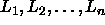
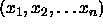
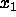
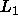
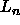
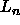

You should prepare these exercises for oral presentation in tutorial.
The following procedure all-choices (which you will use in doing
this problem set) takes as argument a list of n lists  and returns a list whose elements are all possible lists
of the form , where  is chosen from
, is chosen from  , ...,
, ...,  is chosen from .
(Mathematicians call this operation the Cartesian product of the
input lists.) For example, (all-choices '((1 2) (a b c)))
should return
is chosen from .
(Mathematicians call this operation the Cartesian product of the
input lists.) For example, (all-choices '((1 2) (a b c)))
should return
((1 a) (1 b) (1 c) (2 a) (2 b) (2 c))
(define (all-choices possibilities-list)
(if (null? possibilities-list)
'(())
(let ((rest (all-choices (cdr possibilities-list))))
(flatten
(map
(lambda (choice-for-first)
(map (lambda (follow-on)
(cons choice-for-first follow-on))
rest))
(car possibilities-list))))))
Explain how this procedure works. In general, how many possible choices will there be as a function of the input list? How could you modify the procedure to produce a stream of choices rather than a list of choices. (Assume that the argument is still a list.)
Check the 6.001 discussion forum for tutorial-ex-01
|
Look here
for information about the forum.
| |
Using cons-stream, stream-map, stream-filter, create expressions that define an infinitely long stream of 1's and an infinitely long stream of the positive integers. Be prepared to explain why your expressions work.
Check the 6.001 discussion forum for tutorial-ex-02
|
Look here
for information about the forum.
| |
Using the same tools, create an expression that defines an infinitely long stream of the powers of 2 (i.e. 1, 2, 4, 8, 16, ...).
Check the 6.001 discussion forum for tutorial-ex-03
|
Look here
for information about the forum.
| |
Do exercise 3.54 from the text.
Check the 6.001 discussion forum for tutorial-ex-04
|
Look here
for information about the forum.
| |
Do exercise 3.55 from the text.
Check the 6.001 discussion forum for tutorial-ex-05
|
Look here
for information about the forum.
| |